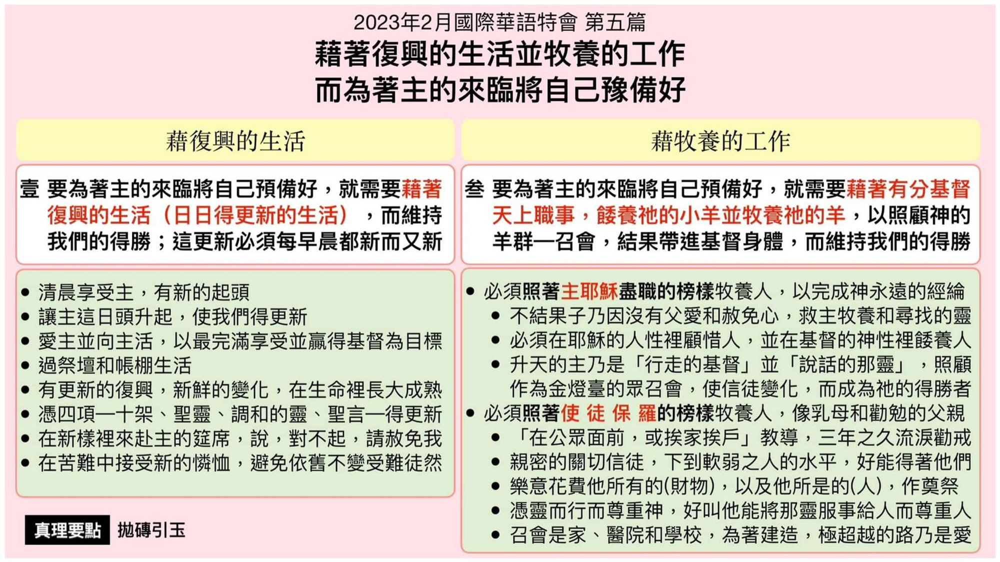

第五篇 借着复兴的生活并牧养的工作，而为着主的来临将自己预备好
前言
主的恢复乃是要豫备新妇 。这样的豫备是需要 时间的，并且牵涉到四方面 。第一 ，我们的态 度(心态)。我们都当爱慕主的显现(同在)。第二 ， 我们的认识 。我们需要藉着圣言的启示而对主 耶稣有更深的认识 。第三 ，我们的操练 。我们 需要装备神的话，好将基督当作食物供应给人 ， 使人在生命里长大以至于成熟 。第四 ，我们的 生活。我们的全人(所是)必须是对的 ，必须是豫 备好的 。因此 ，本篇有两个重点 ：过复兴的生 活并作牧养的工作 ，而维持我们的得胜 ，而这 得胜乃是基督的得胜。我们的责任乃是要继续、 维持基督的得胜 。
真理要点(鸟瞰)
壹 藉着复兴的生活 ：①每日清晨享受主②每晨让主都升起 ③复兴生活的条件④过祭坛帐棚生活 ⑤每日更新的复兴⑥日日更新的凭藉 ⑦以新样赴主筵席⑧接受主新的怜恤
贰 藉着牧养的工作 ：①照着救主的榜样②照着保罗的榜样
经历应用(操练)
叩门传福音、作家排聚会、在会中作申言者等等， 这些不过是外面的作法、活动。新路乃是一种生 活，今天我们都过一种晨晨接触主，叫我们得复 兴的生活，每早晨我们都有一个新的起头。每天 对我们都是新的，在这个复兴、更新的生活里，我 们自然就顾到别人，自然就愿意把我们所享受的 基督，把我们所得着的救主分给人，要人与我们 同享神所给我们的福分。我们把这一天所享受的 基督，当作礼物恭恭敬敬的送给人，这是我们的 本分，也是我们的光荣。
负担
盼望我们能把时间和全人拚上去，尽力接触人 并牧养人。惟有这样，以弗所四章十二至十六节 所说基督身体的生机建造，与林前十四章二十 六节所说相互性的聚会，纔能在我们中间实行 并应验。为此，我们必须有晨晨复兴，日日得胜 的生活作基础；并且有这种爱主的生活和工作， 来维持我们的得胜。若没有复兴的生活并牧养 的工作，我们无法一直得胜，无法维持在得胜 里；能把我们维持在得胜里的，就是这种爱主的 生活和爱主的工作。这两面我们都需要。
